TaskHunt
A freelance marketplace with escrow payments, order chat, disputes and an admin panel. I built the client, API and deployment setup.
- Next.js
- NestJS
- PostgreSQL
- Redis

PTRKXLORDI build web products from interface to deployment: marketplaces, payment flows, Telegram Mini Apps and desktop software.
Technology
Frontend, backend, data, deployment and the AI tools I use during development.
Selected work

A freelance marketplace with escrow payments, order chat, disputes and an admin panel. I built the client, API and deployment setup.
A multilingual event-agency website with motion, SEO metadata and private lead delivery from the contact form.
A Telegram Mini App that produces ad creatives on demand for traffic-arbitrage teams, with payments, referrals and a separate admin area.

A bilingual website with editable content, live preview in the admin panel and correct link previews for messengers.
A media player for macOS and Windows. The macOS version uses Swift and AppKit; the Windows version uses Tauri and Svelte.
About
I have 1.5 years of hands-on project experience across frontend and backend, but haven't worked in-house yet — I built that experience by shipping complete products: interfaces, APIs, databases and deployment.
My main stack is TypeScript, React, Next.js, Node.js, NestJS, Fastify, PostgreSQL and Redis.
I use AI coding assistants like Codex and Claude Code to move faster, but I review, understand and validate everything they produce before it ships.
I also work with Docker, Nginx and CI/CD, and build desktop software with Swift, AppKit and Tauri.
Ukrainian and Russian are native; English is B2. I am open to a junior full-stack role and project work.
Contact
Tell me what needs to be built, what already exists and your expected timeline. I usually reply within a day.